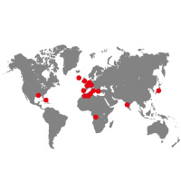

"L’imagination est plus importante que la connaissance. Car la connaissance est limitée, alors que l’imagination embrasse l’univers tout entier."
DESSIN Tennis BATTERIE Voyages guitare-basse MANGAS science-fiction FANTASY JEUX VIDEOS integration JEUX DE ROLES séries tatouage Doctor Who Multimédia web
